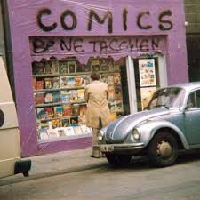
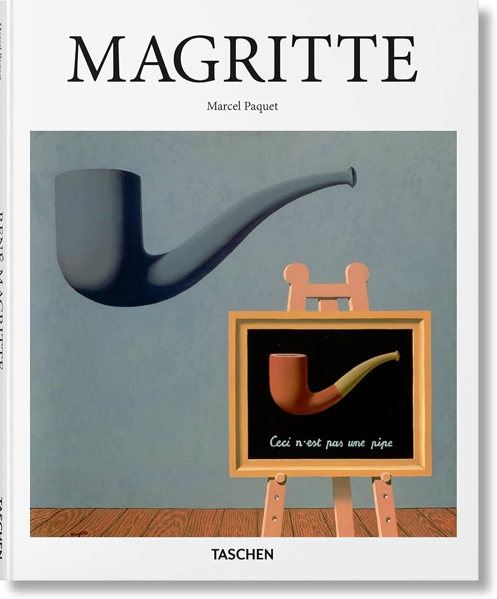
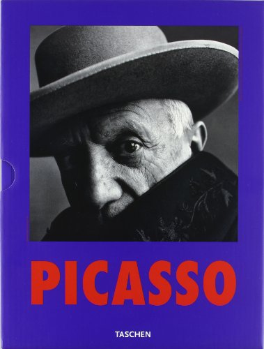
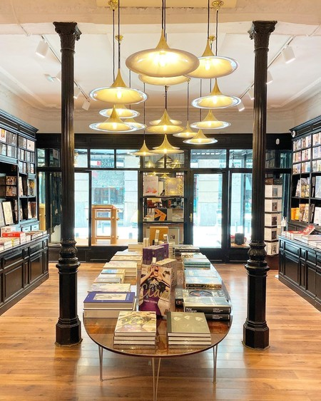
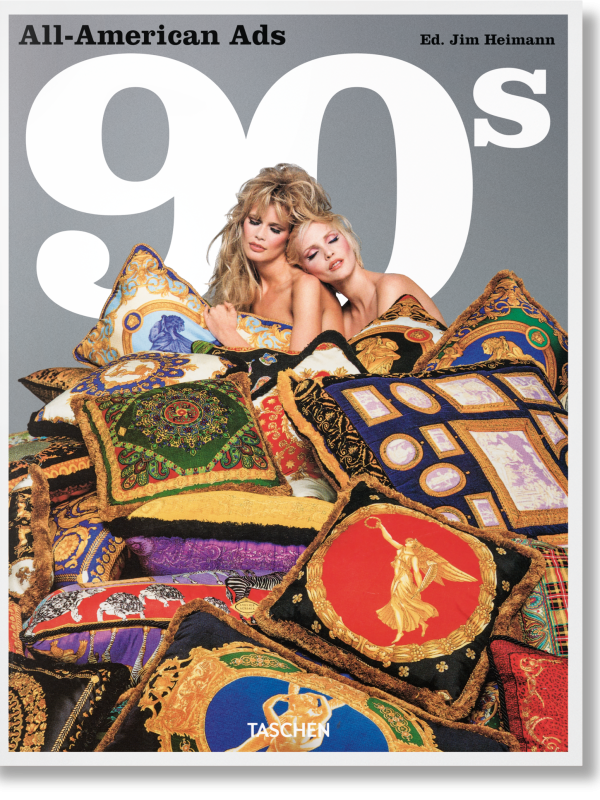
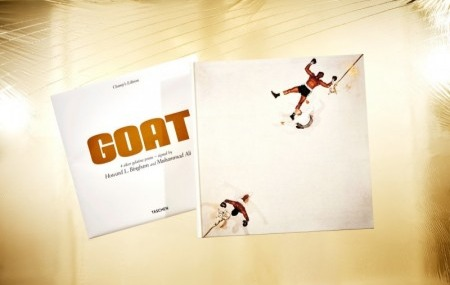
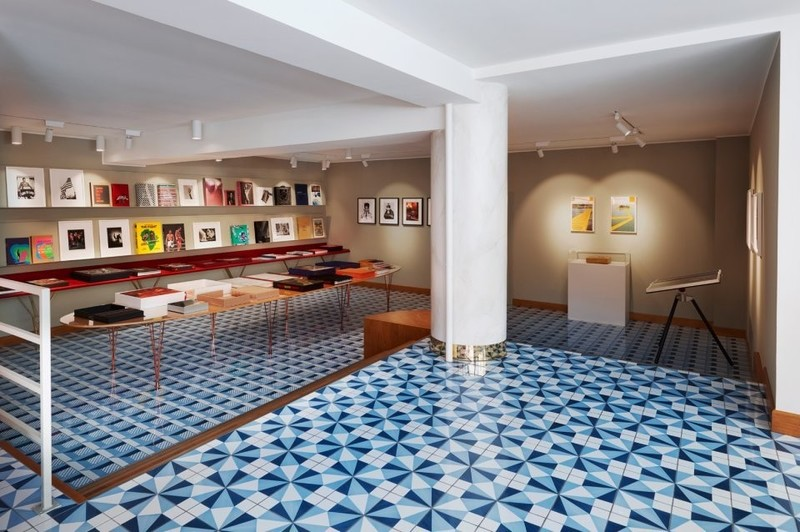

La historia de TASCHEN se remonta a 1980, cuando Benedikt Taschen, un joven aficionado a la lectura, fundó una pequeña tienda de cómics de 23 m² en Colonia, Alemania, un día antes de cumplir 19 años. En aquel modesto local, pintado de rosa y abastecido con su colección personal, quedaron sentadas las bases de lo que con el tiempo se convertiría en una de las editoriales de arte más importante del mundo.

En 1984, un golpe de audacia transformó el rumbo de la editorial. Con capital prestado, Benedikt Taschen adquirió 40.000 ejemplares de una monografía sobre René Magritte a un dólar la unidad y los revendió en pocas semanas al doble de su precio. Aquel episodio le reveló una oportunidad muy importante que todo el mercado editorial había ignorado: existía una demanda real de libros de arte de calidad a precios accesibles. Una lección que definiría para siempre la identidad de TASCHEN.

En 1985, TASCHEN dio el salto definitivo de la distribución a la creación editorial con la publicación de su primer título propio: una monografía sobre el pintor español Pablo Picasso que inauguró la célebre serie Basic Art. El volumen, concebido bajo la misma filosofía que había guiado a la editorial desde sus inicios (arte de calidad al alcance de todos), cosechó un éxito inmediato. Cuatro décadas después, sigue imprimiéndose en 25 idiomas, convirtiéndose en uno de los libros de arte más vendidos de la historia.

A finales de la década, TASCHEN había consolidado su presencia más allá de las fronteras alemanas, llegando a librerías internacionales. En 1989, sus publicaciones estaban disponibles en más de doce idiomas, llegando a lectores de perfiles tan diversos como estudiantes, coleccionistas y amantes del arte de todo el mundo. Lo que había comenzado como una pequeña tienda de cómics de segunda mano en Colonia se había transformado en una editorial con vocación verdaderamente internacional.

Los años 90 marcaron una etapa de diversificación y consolidación para TASCHEN. La editorial amplió su catálogo más allá del arte clásico, abordando con igual rigor la fotografía documental, la arquitectura, el diseño, la cultura pop y temáticas hasta entonces consideradas tabú en el mundo editorial. Esta apuesta por lo heterodoxo, lejos de restar credibilidad a la editorial, reforzó su identidad como un sello dispuesto a explorar sin restricciones la totalidad de la expresión humana.

En 2004, TASCHEN publicó una de las obras editoriales más ambiciosas de la historia: GOAT (Greatest of All Time), un homenaje al boxeador Muhammad Ali. Con 792 páginas, un peso de 34 kilogramos y 50 x 50 cm, el volumen reunía más de 3.000 imágenes de 150 fotógrafos y artistas, así como 600.000 palabras de ensayos y entrevistas a lo largo de cinco décadas. Encuadernado en cuero rosa (el color del primer Cadillac de Ali) por la encuadernación oficial del Vaticano, y disponible en una edición limitada de 1.000 ejemplares firmados por Ali y el artista Jeff Koons, el libro se vendía a 15.000 dólares.

En 2014, Benedikt Taschen extendió su compromiso con la cultura mediante una donación de 500.000 dólares al Museo Wende de Culver City, California, destinada a preservar y difundir el arte, el diseño y la historia de la Guerra Fría. Un año antes había cedido quince obras de su colección privada al Museo Städel de Frankfurt, y junto a su esposa Lauren había donado una extensa selección de obras de jóvenes artistas estadounidenses y europeos al MOCA de Los Ángeles. Estos gestos confirmaron una faceta de Taschen que trasciende lo empresarial: la de un coleccionista y mecenas comprometido con la preservación del patrimonio cultural contemporáneo.
Hoy, TASCHEN es reconocida como la editorial de arte más importante del mundo. Con más de cuatro décadas de trayectoria y sedes en once ciudades (entre ellas Berlín, Londres, Los Ángeles, Madrid, París y Tokio), su catálogo abarca desde monografías de los grandes maestros de la pintura hasta exhaustivos estudios sobre arquitectura, fotografía, diseño y cultura popular. Lo que comenzó como una tienda de cómics de 23 m² en Colonia sigue fiel a la misma convicción que la vio nacer: que el arte de calidad debe estar al alcance de todos.

Consulta más de nuestra historia
en nuestra página web{kind=link}
{kind=link}
{kind=link}
{kind=link}
{kind=link}
{kind=link}
{kind=link}
{kind=link}